Excel Example Frequency Table (Qualitative Data)
Step 1: Enter and select your data by clicking and dragging.
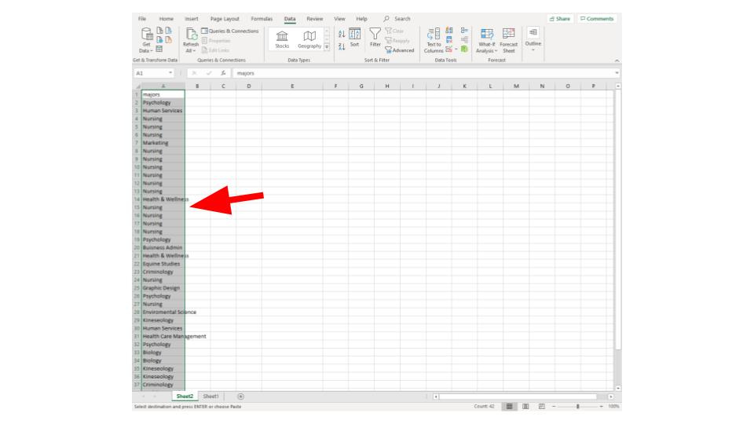
Step 2: Select "Data" from the top menu
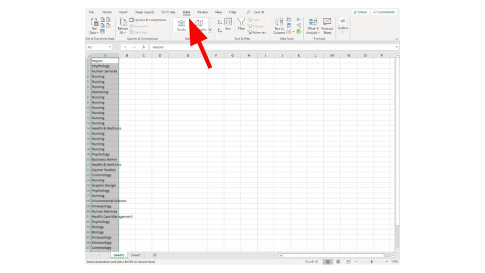
Step 3: Select "Advanced" in the filter options
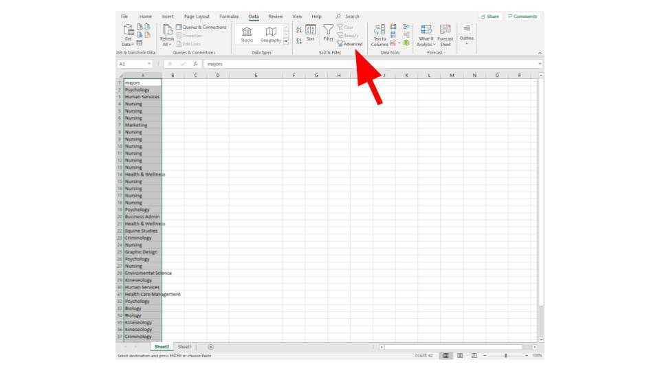
Step 4: In the pop-up menu select "Copy to another location"
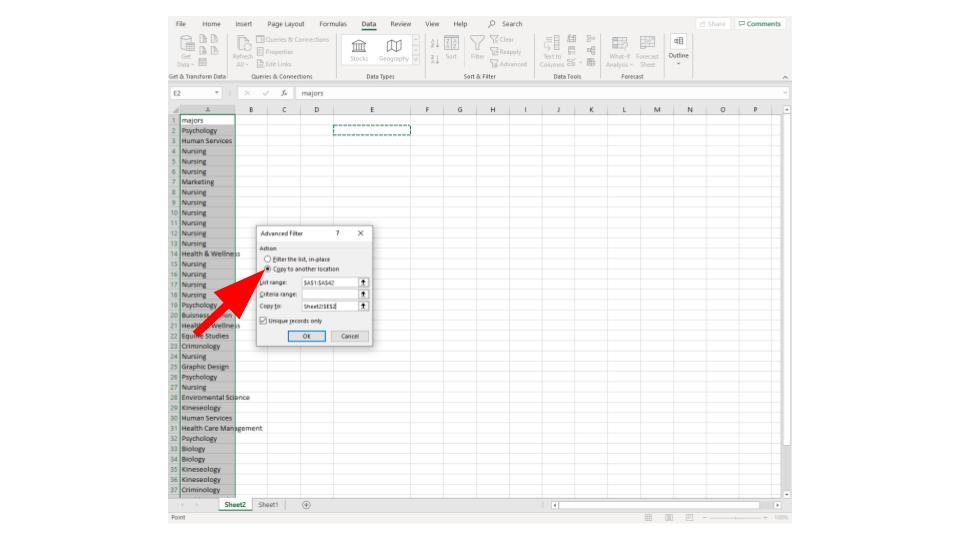
Step 5: In the pop-up menu check the "Unique Records Only" check box
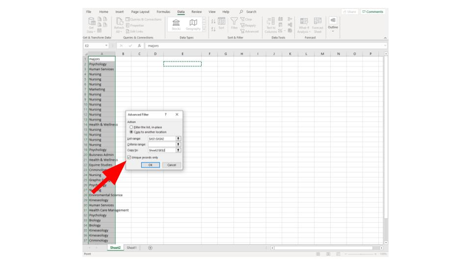
Step 6: In pop-up menu select the "Copy to" box then click on a cell to place the data
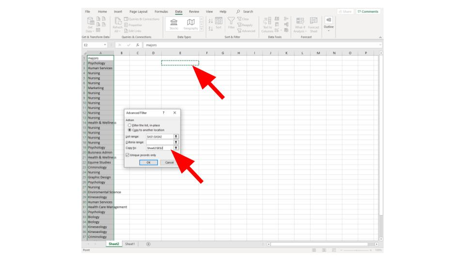
Step 7: Click "Ok" in the pop-up menu
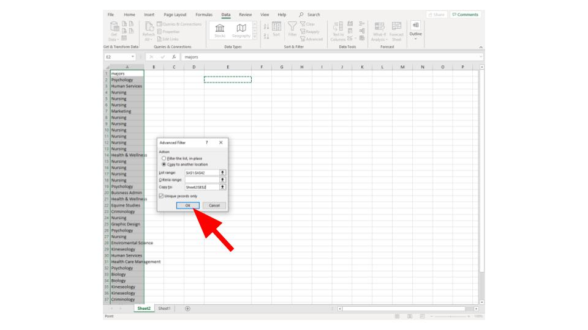
Step 8: Enter a 1 next to your first data entry and then copy the cell (CTRL+C)
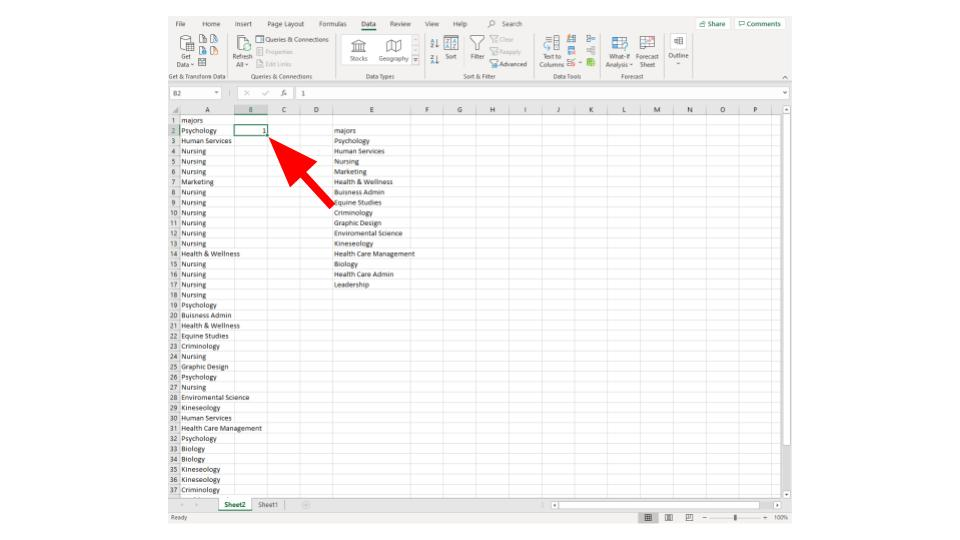
Step 9: Click then drag next to the rest of your data then paste (CTRL+V)
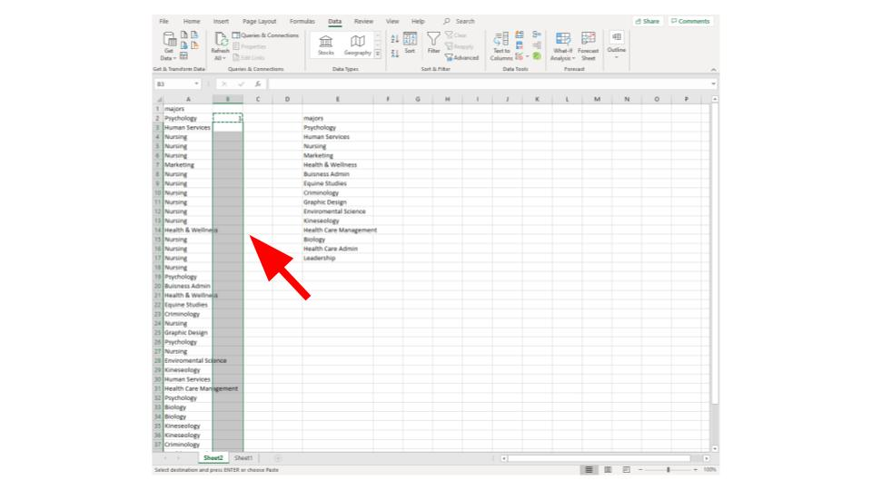
Step 10: In your new column (created by advanced filtering) next to the first entry enter the formula:
=SUMIF([Range of original Data],[Range of unique data entries],[column of 1's])
on can enter [Range of original Data] by clicking and dragging
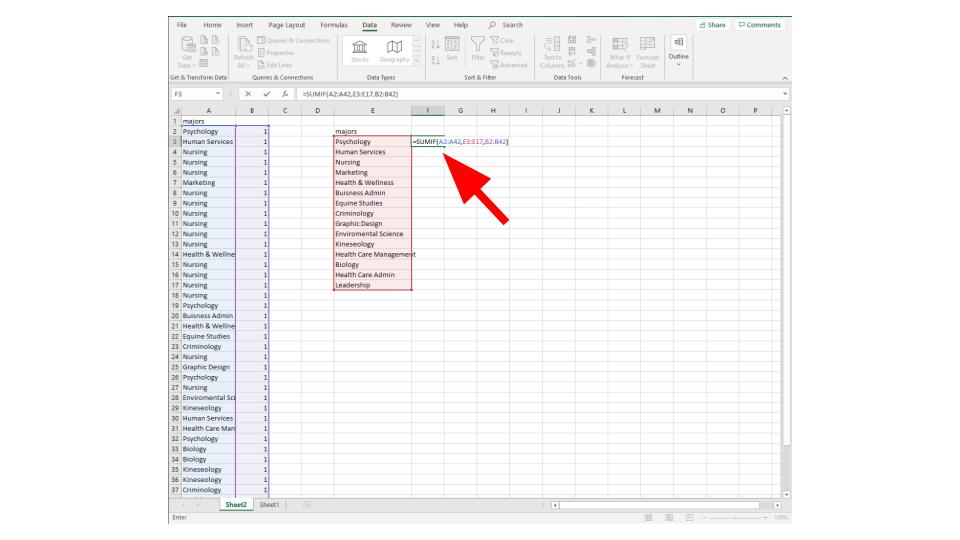
Step 11: All Done!
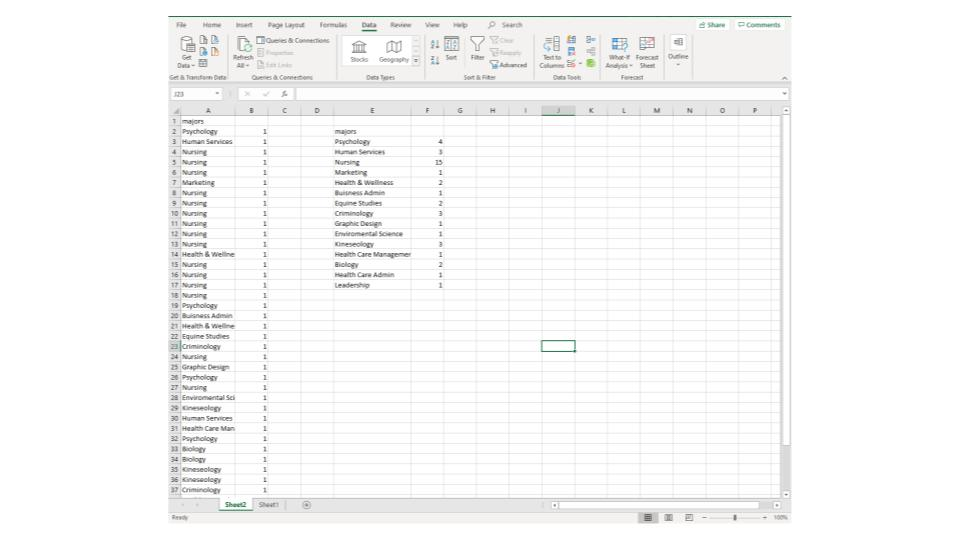
If you would like to watch this being done see the following video: